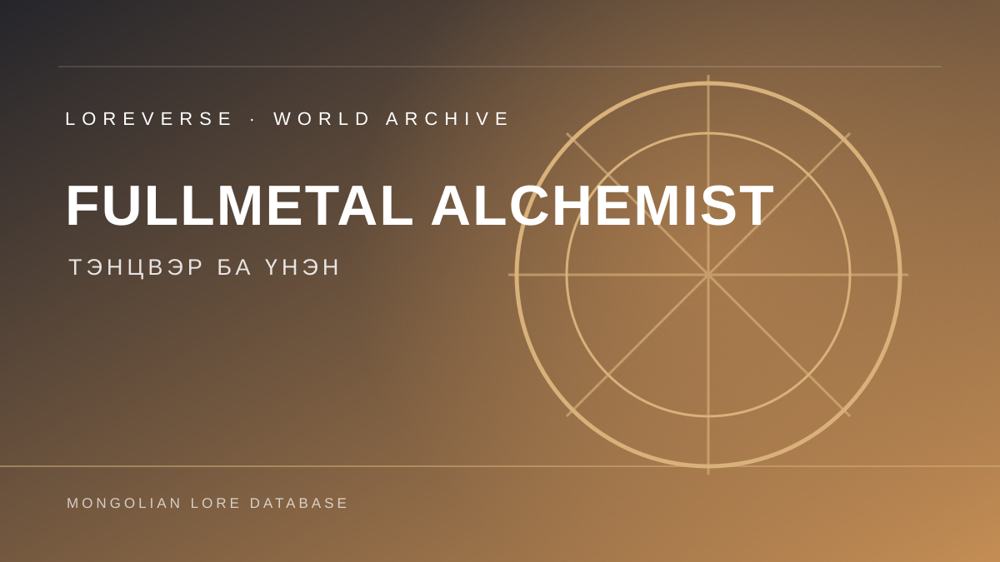

Ертөнц ба түүхэн нөхцөл
Аместрис бол цэрэг төвтэй улс бөгөөд алхими нь шинжлэх ухаан, үйлдвэрлэл, цэргийн хүчний салшгүй хэсэг. Улсын хил, Ишвалын дайн, зүүн ба баруун бүсийн ялгаа нь улс төрийн суурь болдог.
Эдвард, Альфонс Элрик нар хориотой хүний хувиргалт хийх гэж оролдоод бие махбодоо алдсаны дараа алдсан зүйлээ буцаан авахын тулд Философийн чулууг эрэлхийлнэ. Тэдний аялал улсын хэмжээний хуйвалдаанд хүргэнэ.

Аместрис бол цэрэг төвтэй улс бөгөөд алхими нь шинжлэх ухаан, үйлдвэрлэл, цэргийн хүчний салшгүй хэсэг. Улсын хил, Ишвалын дайн, зүүн ба баруун бүсийн ялгаа нь улс төрийн суурь болдог.
Алхими нь ойлгох, задлах, дахин бүтээх зарчимд тулгуурлана. Тэнцүү солилцооны хууль нь суурь боловч Философийн чулуу, Үнэн, хаалганы тухай нууц энэ хуулийн хязгаар болон өртгийг илчилдэг.
Эдвард Элрик — улсын алхимич, ах; Альфонс Элрик — хуягт биед сүнс нь холбогдсон дүү; Рой Мустанг — галын алхимич; Риза Хоукай — Мустангийн итгэлт туслах; Уинри Рокбелл — механик протезийн урлаач; Хомункулууд — гол антагонист хүч.
Аместрисийн арми, Ишвалын иргэд ба амьд үлдсэн хүмүүс, Хомункулуудын нууц сүлжээ, Ксенотим зэрэг бүлгүүд үйл явдалд оролцоно. Цэргийн тушаал ба хувь хүний ёс суртахууны зөрчил гол байр суурьтай.
Элрик ах дүүсийн хориотой хувиргалт → Философийн чулууны эрэл → Ишвалын дайны үнэнийг судлах → Улсын хэмжээний хуйвалдаан илрэх → Амлалттай өдөр ба эцсийн шийдвэр.
Албан ёсны анимэний сайт: https://www.hagaren.jp/
Brotherhood нь манганы үйл явдлыг үндсэндээ дагадаг; 2003 оны Fullmetal Alchemist анимэтэй адил хувилбар биш.
Энэ хуудас нь LOREVERSE-ийн Монгол хэл дээрх фэн судалгааны материал. Албан ёсны бүтээл биш. Канон, дасан зохицуулалт, фэн таамгийг тусад нь тэмдэглэн шинэчилнэ.
Энэ хэсэг нь ертөнцийн дотоод логик, дүрийн зорилго, хүчний дүрэм, улс төрийн нөхцөл болон үйл явдлын шалтгаан-үр дагаврыг нэгтгэнэ. Спойлерын агуулгатай.
Аместрис бол төвлөрсөн цэргийн улс. Улсын алхимичид төрийн алба хааж, судалгаа, дайны ажиллагаанд оролцдог. Ишвалын дайн нь улсын эрх мэдэл, цэргийн тушаал, иргэдийн эсэргүүцлийн ёс суртахууны үр дагаврыг илчилнэ. Улсын хил, төмөр зам, цэргийн бүсүүд нь төвөөс зах руу чиглэсэн хяналтын сүлжээ үүсгэнэ.
Алхими нь бодисыг задлах, дахин бүтээх шинжлэх ухаан бөгөөд Тэнцүү солилцооны зарчимд тулгуурлана: ямар нэг зүйл авахын тулд ижил үнэ цэнтэй зүйл өгөх ёстой. Трансмутацийн тойрог нь үйл явцыг чиглүүлдэг; тойроггүй трансмутаци хийх чадвар нь Үнэний хаалгыг харсан хүмүүстэй холбоотой. Хүний трансмутаци хориотой бөгөөд оролдлого нь хүний бие, сүнс, мэдлэгийн хэмжээлшгүй үнэтэй мөргөлдөнө.
Эдвард Элрик — хамгийн залуу Улсын алхимич, ах дүүгээ аврахыг зорьдог; Алфонс Элрик — сүнс нь хуягт бэхлэгдсэн дүү; Винри Рокбелл — автомэйл механик; Рой Мустанг — дөлний алхимич, төрийн шинэчлэгч; Риза Хоукай — Мустангийн үнэнч хамгаалагч; Изуми Кёртис — ах дүүсийн багш; Хоэнхайм — Эд, Ал хоёрын эцэг; Father — улсын нууц хуйвалдааны гол зангилаа.
Улсын арми нь төв командлал, генералууд, Улсын алхимичдаас бүрдэнэ. Хомункулууд нь хүний долоон нүглийн нэрээр нэрлэгдсэн хиймэл оршихуйнууд; тэдний үүрэг Father-ийн төлөвлөгөөтэй холбогдоно. Ишвалын амьд үлдсэн хүмүүс, Скараар төлөөлөгдөх өшөө авалт ба шударга ёсны зөрчил чухал.
1) Эд, Ал нар эхийнхээ хүний трансмутацийг оролдож, биеэ алддаг. 2) Философийн чулууг эрэх аялал эхэлнэ. 3) Лиор, тавдугаар лаборатори, Хомункулын мөр. 4) Хьюзийн үхэл, Мустангийн мөрдлөг. 5) Ишвалын дайны үнэн ба Скараар дамжих өшөө авалтын сэдэв. 6) Бриггс, Хойд хил, Father-ийн төлөвлөгөө. 7) Амлалтын өдөр, улсын хэмжээний трансмутацийн төлөвлөгөө. 8) Эцсийн солилцоо ба ах дүүсийн сонголт.
Equivalent Exchange — тэнцүү солилцоо; Gate of Truth — алхимийн мэдлэг ба Үнэний бэлгэдэл; Philosopher’s Stone — хүний сүнсний үнээр хүч нэмэгдүүлдэг чулуу; Automail — механик хиймэл мөч; Human Transmutation — хориотой хүний трансмутаци.
Brotherhood нь манганы үйл явдлыг дагасан 2009 оны анимэ. 2003 оны Fullmetal Alchemist цуврал өөрийн эхний хэсгийн дараа мангагаас өөр түүхээр үргэлжилдэг тул хоёр хувилбарын төгсгөл, дүрийн хувь заяаг хооронд нь хольж болохгүй.